内存马
1.PHP内存马：
1.“不死”马：所谓的不死马，其实就是直接用代码弄一个死循环，强占一个 PHP 进程，并不间断的写一个PHP shell，或者执行一段代码。缺点是阻塞进程，而且很多时候还是要本地落盘文件
2.Fastcgi马：这个利用了 PHP-FPM 可以直接通过 fastcgi 协议通讯的原理，可以指定SCRIPT_FILENAME，去执行机器上存在的 PHP 文件；或者配合auto_prepend_file+php://input，通过每次提交POST code去执行。（年代久远）。严格说只是对 FPM 未授权访问的漏洞利用
3.改进的****Fastcgi马
从 PHP-FPM 这个 fastcgi server 的实现上，这个 FPM 的进程就是持久化的，并且并不会如传统 CGI 模式一样，处理一个请求就会消亡。因此只要能在这个进程上下文中保存信息，就可实现。
在一次 fastcgi 请求中，任何通过 PHP_VALUE/PHP_ADMIN_VALUE 修改过的PHP配置值，在此 FPM 进程的生命周期内，都是会保留下来的。于是，只需要把前面提到的2.Fastcgi马略微改一下即可。
触发方式延续着之前的auto_prepend_file的方案，但由于我们是想要内存马，我们不再沿用php://input，否则还得每次都得提交代码，而是替换成data协议固定下来。假设在我们获取到一个 Web 的权限后——甚至我们可能只需要一个 SSRF 漏洞即可——我们只需要往 fpm 监听的端口发送如下结构的内容（这里是我本机测试）：
1 | array(15) { |
可看到，由于不需要php://input，我们只需要 GET 请求即可，并且，构造请求只需要随意给一个存在的 php 文件路径，无所谓内容是啥。一个发包搞定一切，我们的 payload 已经无文件植入了。由于使用了auto_prepend_file，因此我们只需要访问服务器上任意一个正常的 PHP 文件，无需任何修改，都能触发我们的内存马。
我们访问个普通的 phpinfo.php 文件，看看是否能够稳定的固化我们的内存马。
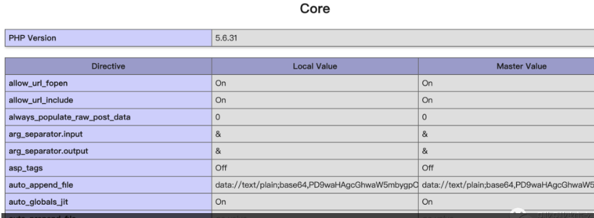
i果然已经成功的把我们想要的payload植入了进去。这里我们payload使用的是的 base64。我们访问phpinfo.php?test=echo(aaaaa);看看效果，当然正常使用的时候我们可以更隐蔽。
i当然，这个方案也有局限性，因为是内存马，所以他实际上是和PHP-FPM的 Worker 进程绑定的，因此，如果服务器上有多个Worker进程，我们就需要多发送刚才的请求几次，才能让我们的payload“感染”每一个进程。
此外，我们还需要关注一个php-fpm.conf的配置:
1 | pm.max_requests int |
这个配置定义了每一个 worker 进程最大处理多少请求，就会自动重生。主要作用可能是避免内存泄露，但是一旦重生了，我们的内存马也就失效了。默认是不会重生的。
检测思路：
- 检查所有php进程处理请求的持续时间
- 检测执行文件是否在文件系统真实存在
克制：
使用条件竞争写入同名文件进行克制不死马。
2.Python内存马
利用flask框架的ssti注入来实现，flask框架在web应用模板的渲染过程中用到render_template_string()函数进行渲染，但是未对用户输入的代码进行过滤，导致可以注入恶意代码实现内存马
检测思路：
- 查看所有内建模块中是否包含eval、exec等可以执行代码的函数如：class ‘warnings.catch_warnings’、class ‘site.Quitter’等。
- 检测self.add_url_rule()中特殊名字的路由如shell等。
3.JAVA内存马
首先客户端向服务端发起一个web请求，中间件的各独立组件如Lisrener、filter，servlet等进行监听、判断、过滤等操作，内存马利用请求过程在内存中修改一个已有的组件或动态注册一个新的组件，插入shellcode达到持续化的控制服务器
3.1.filter内存马
filter作为过滤器组件可以对用户的请求进行拦截和修改，当web.xml注册了一个filter对某个 servlet程序进行拦截处理时，可以对S容器发送给S程序的请求和S程序回送给S容器的响应进行拦截，可以对请求和响应信息进行修改。filter型内存马是将执行命令的文件通过动态注册成一个恶意的filter，没有落地文件但是可以让客户端发送请求通过他来执行命令。
filter检测思路：
- 带有特殊含义的filter的名字比如shell等。
- Filter的优先级，filter内存马需要将filter调至最高
- 查看web.xml中有没有filter配置
- 检测特殊的classloader
- 检测classloader路径下没有class文件
- 检测Filter中的doFilter方法是否有恶意代码
内存马判断
先判断是通过什么方法注入的内存马，可以先查看web日志是否有可疑的web访问日志，如果是filter或者listener类型就会有大量url请求路径相同但参数不同的日志
页面不存在但是返回200的，查看是否有类似哥斯拉、冰蝎相同的url请求，哥斯拉和冰蝎的内存马注入流量特征与普通webshell的流量特征基本吻合。
查找返回200的url路径对比web目录下是否真实存在文件，如不存在大概率为内存马。如在web日志中并未发现异常，可以排查是否为中间件漏洞导致代码执行注入内存马，排查中间件的error.log日志查看是否有可疑的报错，根据注入时间和方法根据业务使用的组件排查是否可能存在java代码执行漏洞以及是否存在过webshell，排查框架漏洞，反序列化漏洞。
内存马查杀:
java-memshell-scanner
cop.jar首先可以先看result.txt中标记高危的class，cop.jar工具会把所有的文件都还原成jsp文件，可以用D盾等webshell查杀工具进行扫描。
3.arthas-boot.jar工具地址：https://github.com/alibaba/arthas
工具使用思路：arthas-boot.jar工具可以先排除可疑名字的servlet和filter节点，如攻击者隐藏的更深需要将所有的类都反编译导出来然后逐一排查。
arthas实例
安装 Arthas
https://github.com/alibaba/arthas/releases
下载压缩包解压执行
1 | wget https://github.com/alibaba/arthas/releases/download/arthas-all-3.6.6/arthas-bin.zip |
植入内存马之前查看内存中mbean信息。
1 | mbean | grep "name=/" |
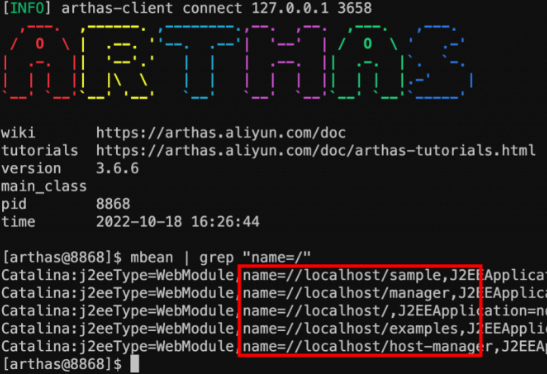
1.哥斯拉内存🐎
哥斯拉的webshell提供了memoryShell和FilterShell两种内存🐎
1.1.FilterShell
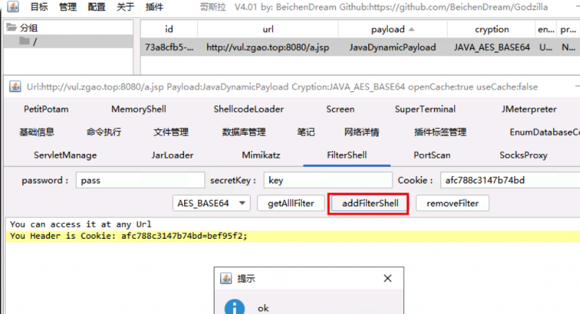
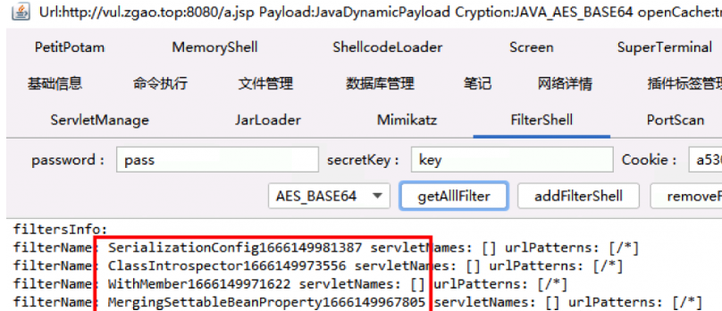
使用以下两条命令都可以看到哥斯拉的Filter内存马name中都带有时间戳。
1 | sc *.Filter |
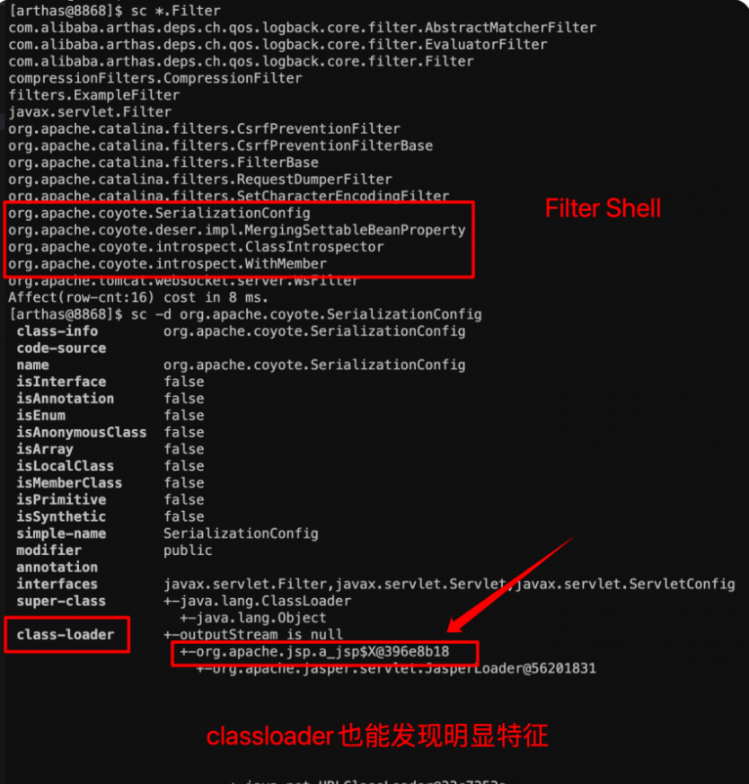
使用jad反编译我们认为可疑的类。
1 | jad org.apache.coyote.SerializationConfig |
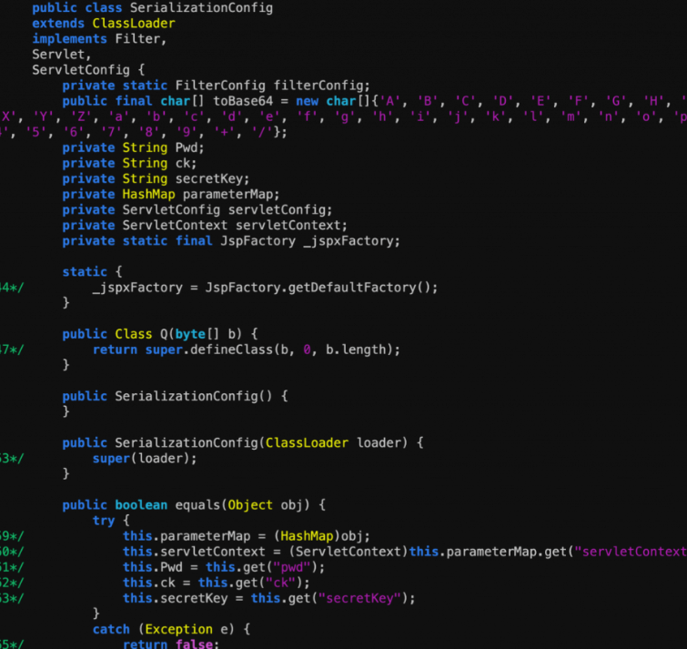
代码中大量运用invoke反射来实现。
1.2.memoryShell
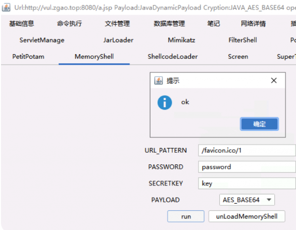
添加该内存马后通过mbean可以看到多了几个servlet。
1 | mbean | grep "name=/" |
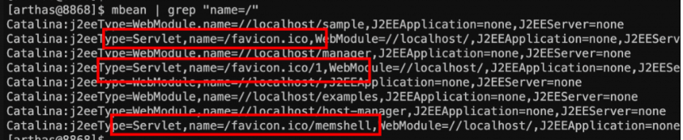
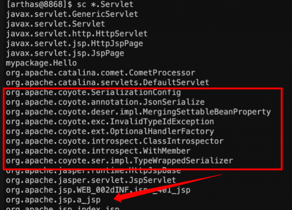
可疑的classloader。
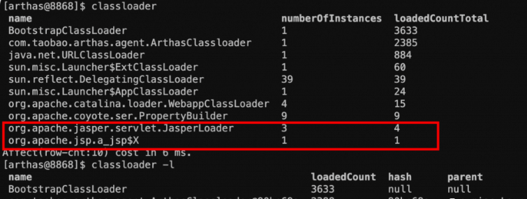
2.冰蝎内存🐎
2.1.常规思路
冰蝎内存马由于对底层函数做了hook的操作，所以特征更弱一些。
先生成冰蝎4.0的服务端，上传后连接注入内存马。
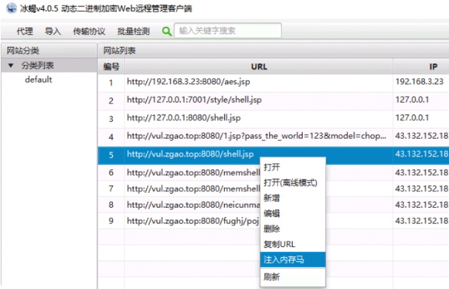
开启冰蝎的防检测功能。
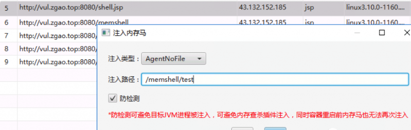
连上内存马。
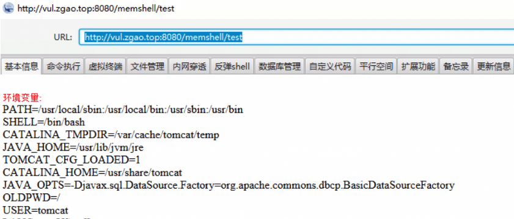
冰蝎的classloader。
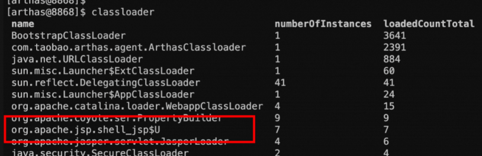
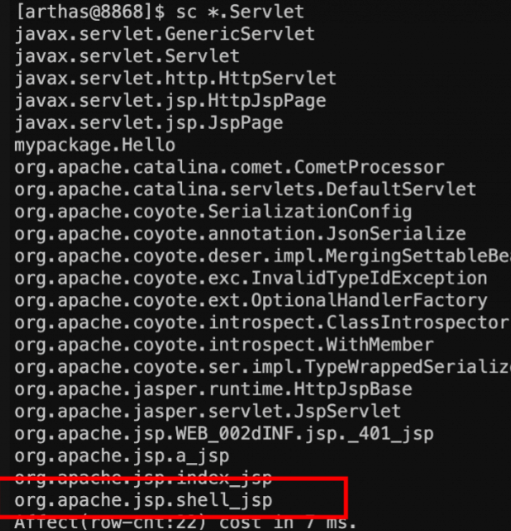
冰蝎🐴属于Servlet类型的，不过并不是加载内存马之后才有的，而是连接冰蝎服务端的时候就有的。
反编译冰蝎的马，可以看到明显AES加密的key
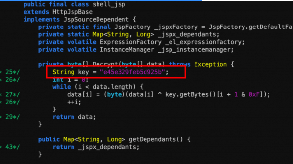
2.2..heapdump 内存排查—终极排查思路
不管冰蝎的内存马如何hook，但是内存🐴肯定是在内存中的。并且访问的时候是有路由映射的。那么内存dump出来的文件肯定会有记录。
heapdump
1 | strings /var/cache/tomcat/temp/heapdump2022-10-19-12-464292342944555007800.hprof| grep "POST /" |
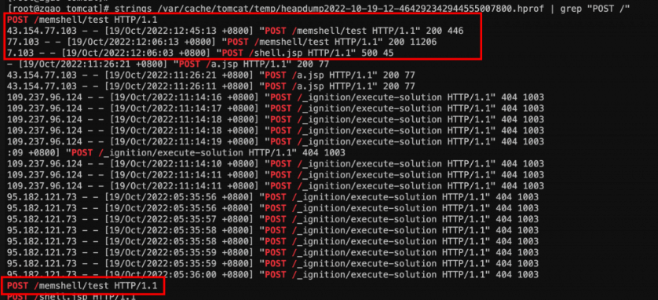
2.3.查找内存中web目录的可疑路径。 strings /var/cache/tomcat/temp/heapdump2022-10-19-12-464292342944555007800.hprof| grep -E "/webapps/.*?\!"| sort -u
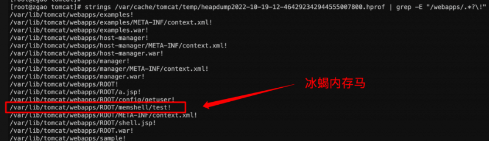
Arthas可能报错Unable to opensocket file: target process not responding or HotSpot VM not loaded
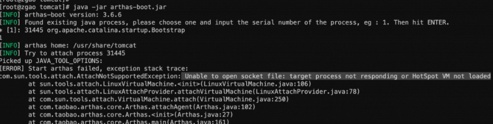
该报错是因为tomcat是以tomcat用户运行的，而我们用arthas是用root用户运行的。JVM 只能 attach 同样用户下的 java 进程。
使用runuser命令即可以tomcat用户运行arthas。
1 | runuser -l tomcat -c "java -jar /usr/share/tomcat/arthas-boot.jar" |
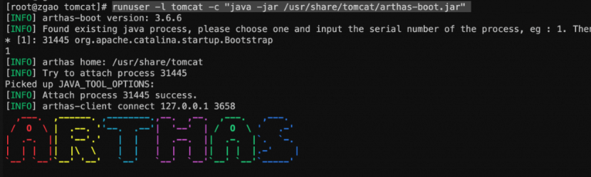